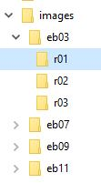

Images Folder
We store all image files used in the scanning process in the images folder. The files are copied from the archive folder and saved in folders for edition and entry subsection. Retain the original file names.
Image sources
Each edition has a different image source. Three were available through the Internet Archive, and one from Hathi Trust. Original print publication information is listed below, followed by the physical location of the volumes, if known, and the digital archive where the files are stored, as well as the file format. Finally, we acknowledge the organization who digitized the print volumes.
- eb03
- Encyclopaedia Britannica. 18 vols., + 2 suppl. vols. Edinburgh: A. Bell and C. MacFarquhar, 1788-1797. Internet Archive, TIFF format. Digitized by Getty Research Institute.
- eb07
- Encyclopaedia Britannica. 21 vols. Edinburgh: Adam and Charles Black, 1830-1842. Print source in the University of Wisconsin Library. Hathi Trust, PDF format. Digitized by Google.
- eb09
- Encyclopaedia Britannica. 25 vols. NY: Charles Scribner's Sons, 1875-1889. Print source in UC Berkeley Library. Internet Archive, JP2 format. Digitized by California Digital Archive.
- eb11
- Encyclopaedia Britannica. 29 vols. NY: Cambridge University Press, 1910-1911. Print source in the James J. Hill Center Reference Library, St. Paul, MN. Internet Archive, JP2 format. Digitized by Basic e-Learning Library (BeLL).